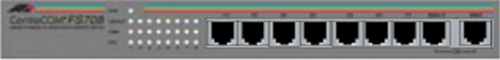
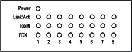

Operating Documentation
Direction 5114043-800, Rev# 9
LightSpeed 3.X Service Methods (Advanced)
Operating Documentation |
For additional product information, see Allied Telesyn web site at www.alliedtelesyn.com.
The AT-FS708 (Figure 5-30) is a twisted pair eight-port, Fast Ethernet switch. It has seven auto-negotiable 10BaseT/100 Base-TX ports with a total bandwidth of 800 Mbps. Port 8 can be used as a MDI or MDI-X port for simple connection (via straight-through cable) to other hubs or switches. The AT-FS708 series is fully compliant with IEEE 802.3u standards for 100 Mbps baseband networks. All connectors and LEDs are located on the front panel.
Illustration 1: AT-FS708 Front Panel

Table 1 lists connectors and defines their function.
Table 1: Connector Types on Switches
| Switch | Connector | Function |
|---|---|---|
| AT-FS708 | Ports 1 through 8 are 10/100Base-TX connectors (RJ45) | Connecting to a high performance workstation, server, or hub. |
Only use the cables supplied with the system. Category 5e cables must be used with 100Base-TX connections. Using any other category for a 100Base-TX connection can result in high error rates. If voice-quality cables are used in a 100Base-TX network system, data movement can be slow, collision-prone or non-existent. In addition, interface LEDs will usually indicate a valid link in such cases.
Illustration 2 shows the front panel LEDs; Table 2 lists and defines these LEDs.
Illustration 2: Front Panel LEDs (AT-FS708)

Table 2: LED Status
| LEDs | Color | Description |
|---|---|---|
| Power (switch) | Green | ON indicates that the switch is receiving power. |
| OFF indicates that there is no power to the switch. | ||
| LINK/ACT (port) | Green | ON indicates a valid physical link on the port. Blinking indicates data is being transmitted. |
| OFF means no link. | ||
| 100M (port) | Green | ON means the bandwidth is 100 Mbps. |
| OFF means the bandwidth is 10 Mbps. | ||
| FDX (port) | Green | ON indicates full-duplex mode. |
| OFF indicates half-duplex mode. |
The AT-FS708 series switch uses internal switching power supplies with 100 to 120 VAC, 50/60 Hz input rating. Maximum power consumption is 50W.